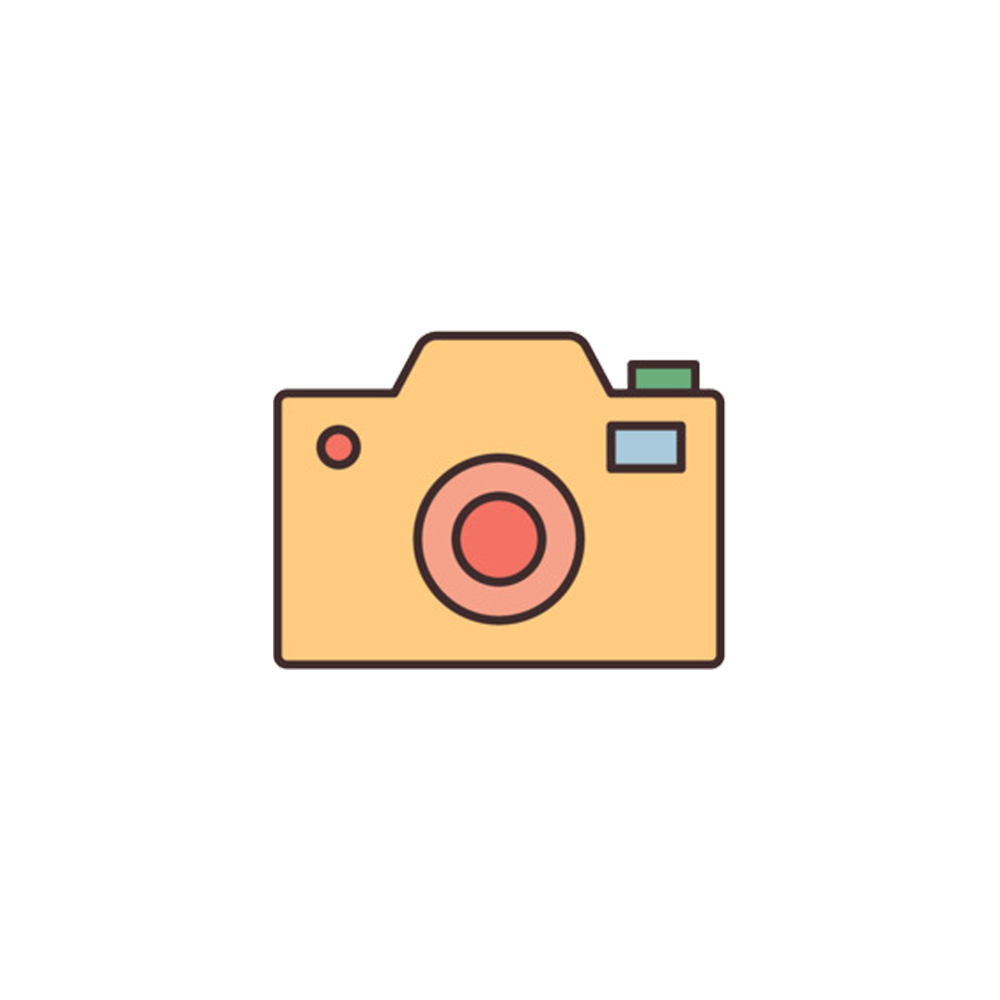
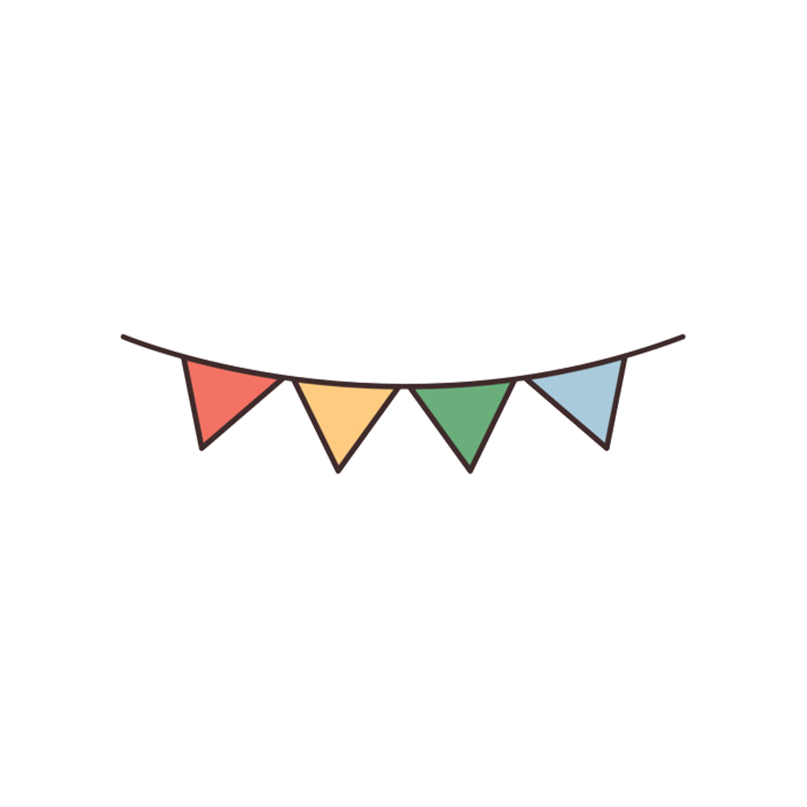
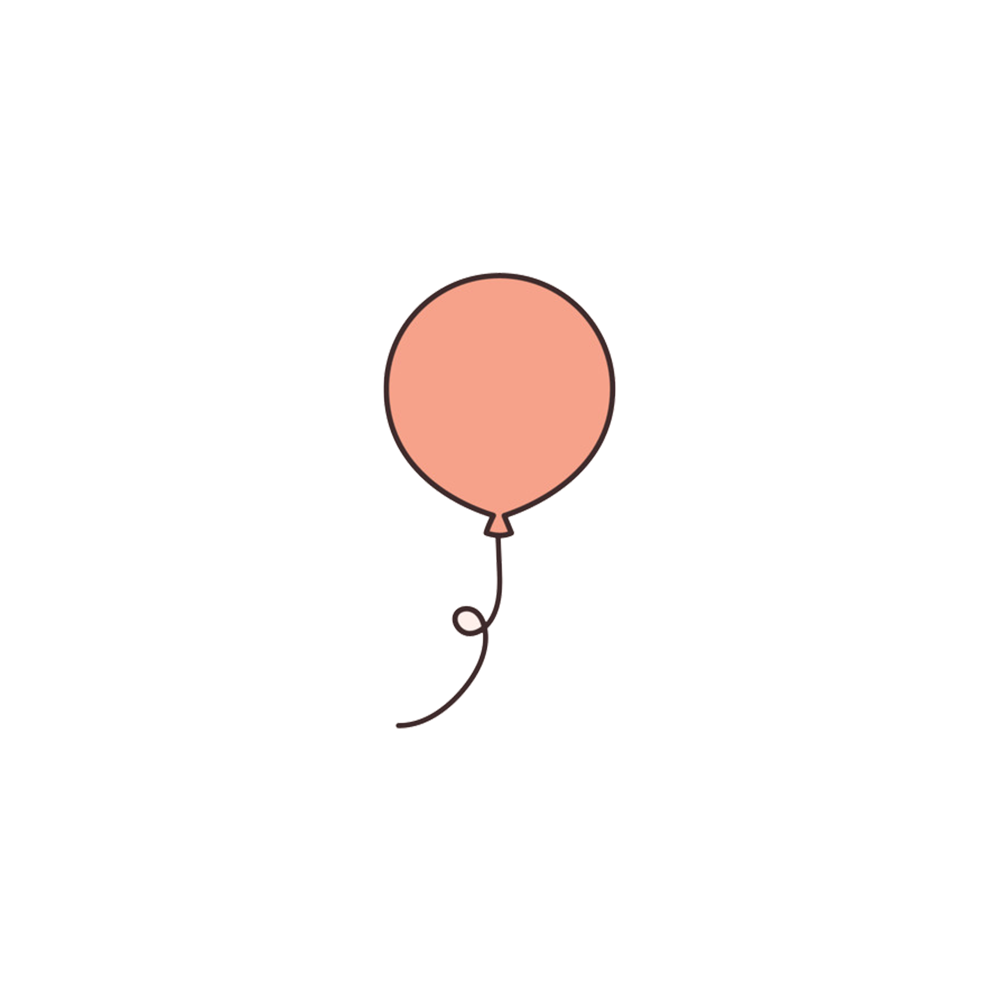
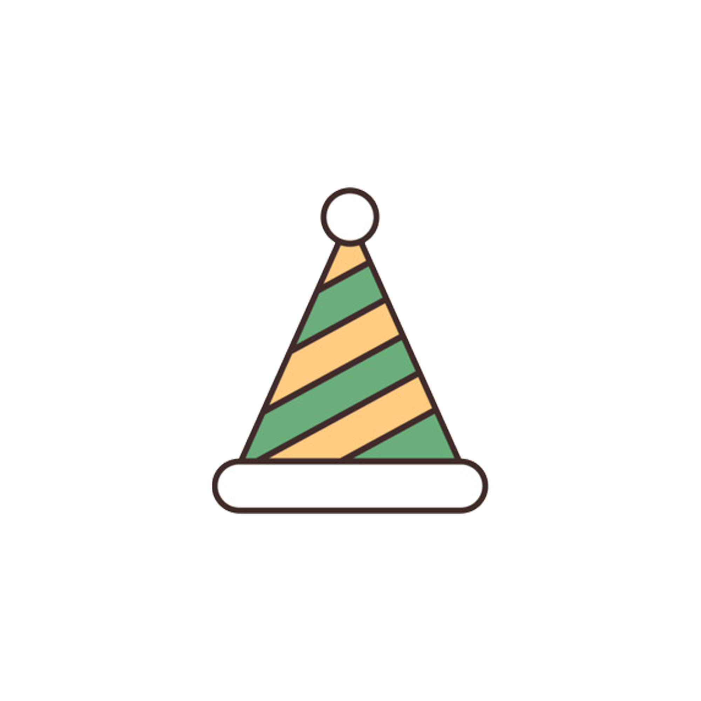
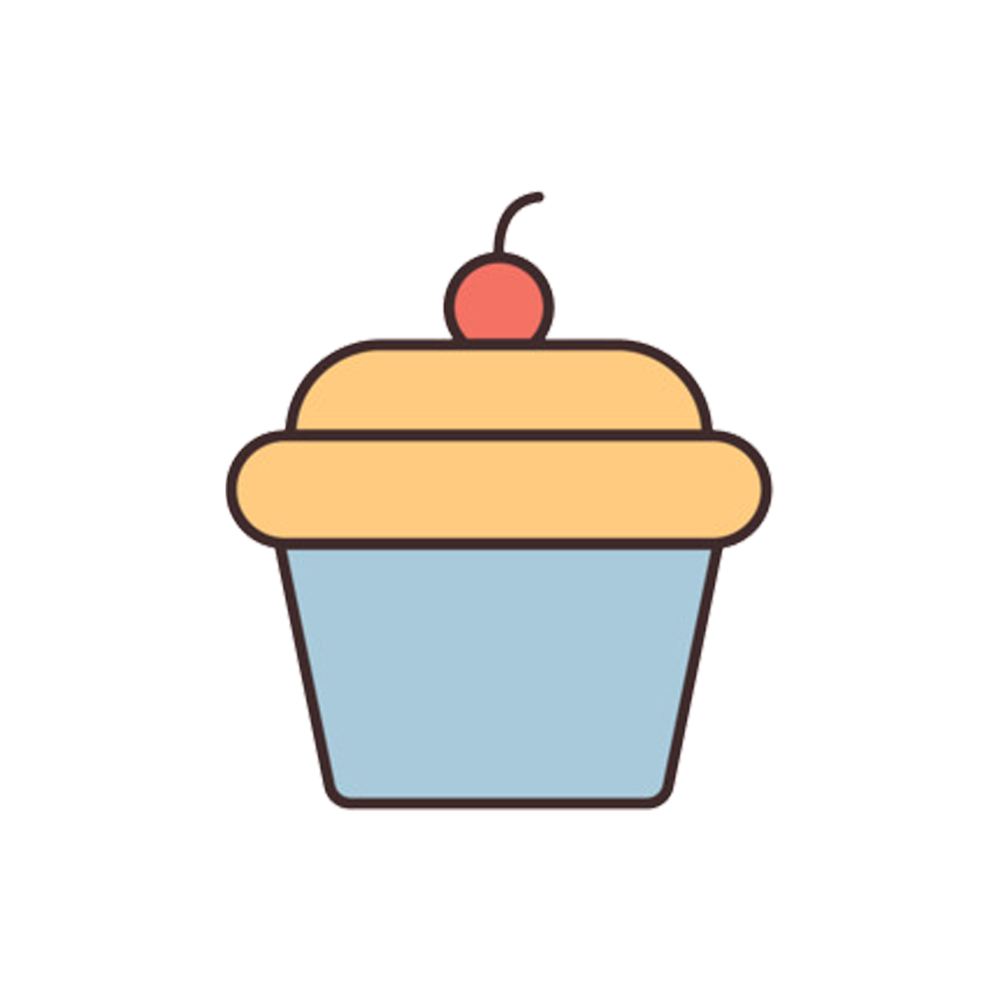
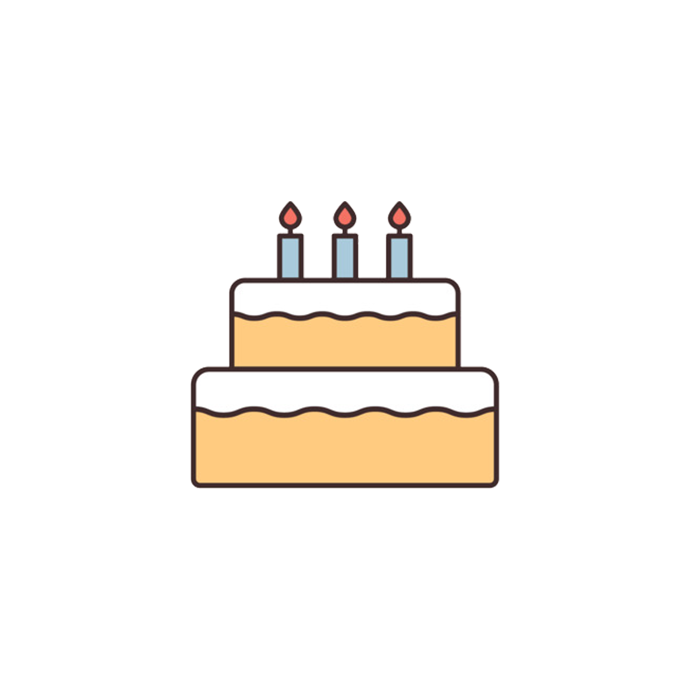
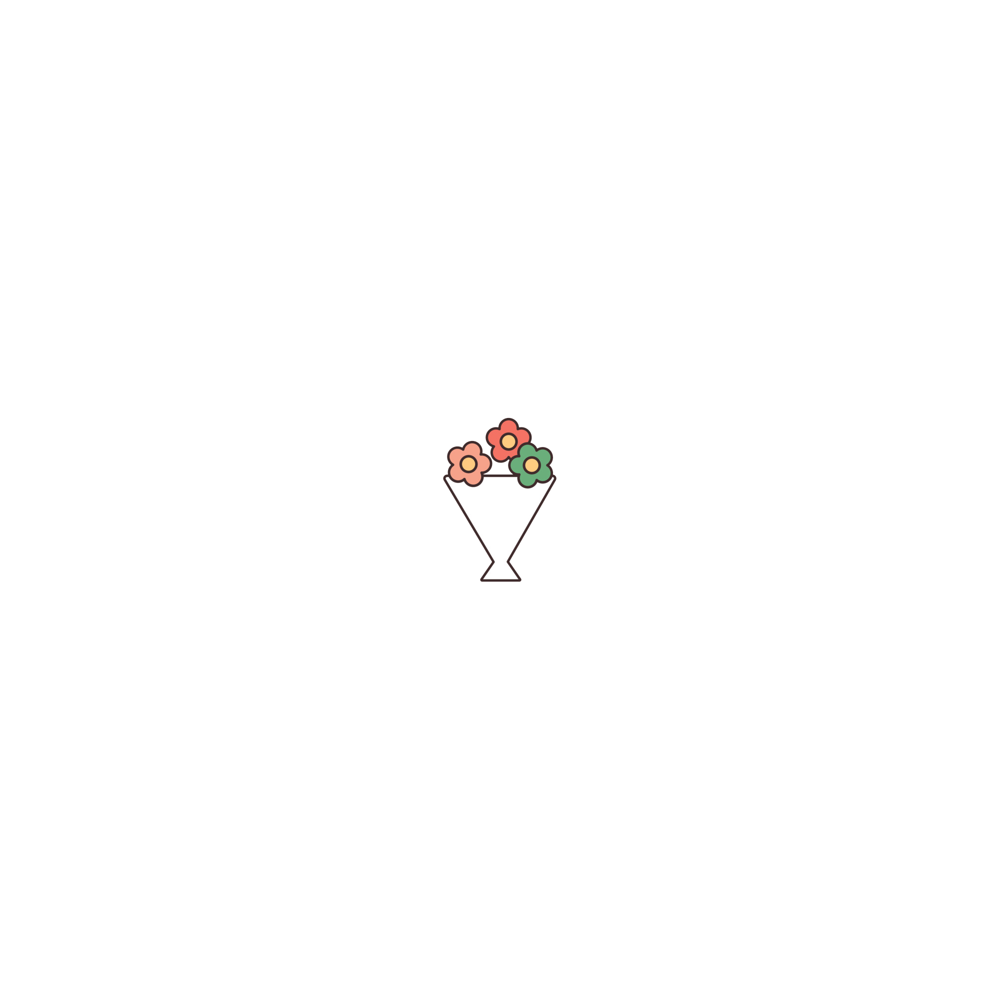
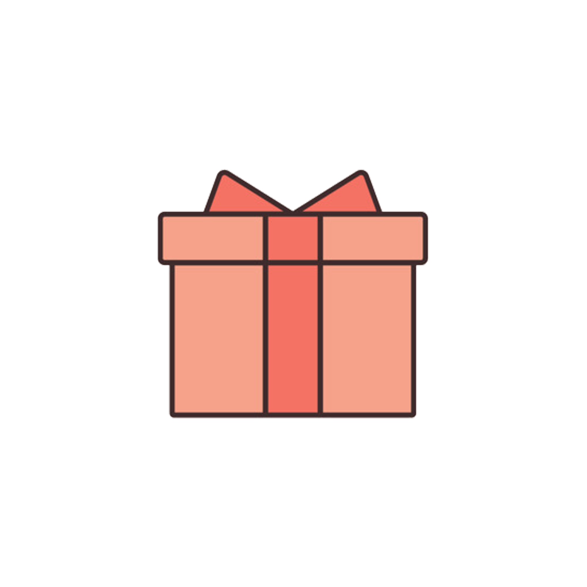
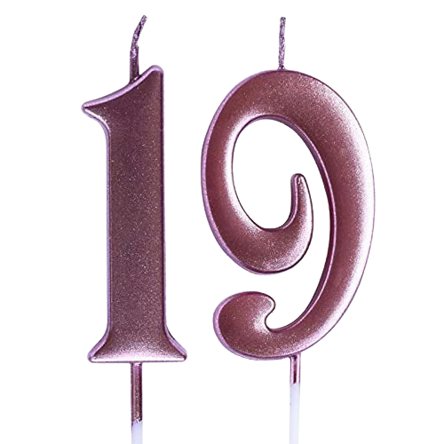

Yuk sayanggg ditiup lilinnya
Ucapan Cinta
Semoga hari ini penuh dengan cinta dan kebahagiaan. Kamu adalah segalanya bagiku!
Your browser does not support the audio element.
Tampilkan Kartu Ucapan